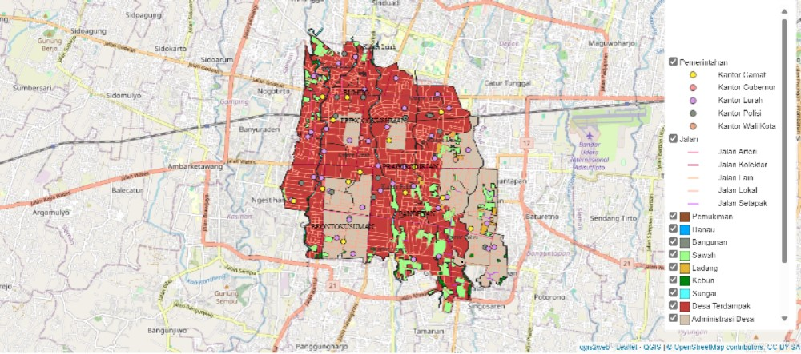
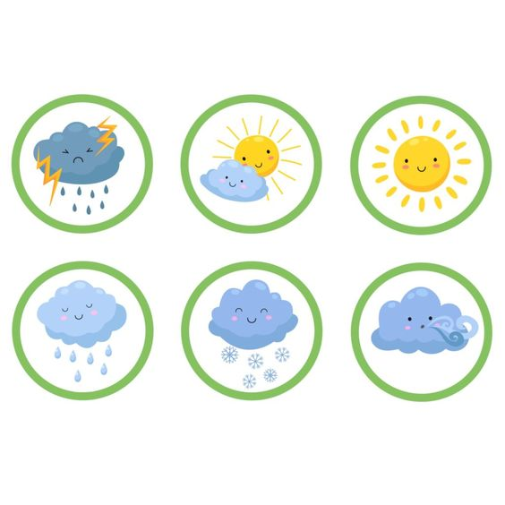

Our Services
Our Services

Peta Bencana Banjir
Menyediakan peta persebaran wilayah provinsi DIY berpotensi terdampak bencana banjir.

Prosedur Peringatan Dini dan Evakuasi Darurat
Serangkaian langkah-langkah yang dirancang untuk membantu masyarakat dalam menghadapi ancaman banjir.

Peta Bencana Banjir
- Peta persebaran banjir membantu mengidentifikasi daerah-daerah yang rentan terhadap banjir.
- Data dari peta persebaran banjir digunakan untuk memantau dan memprediksi banjir mendatang.
- Peta ini digunakan untuk meningkatkan kesadaran masyarakat tentang risiko banjir di wilayah mereka dan tindakan pencegahan yang dapat diambil.
Prosedur Peringatan Dini dan Evakuasi Darurat
Prosedur ini membantu masyarakat untuk meningkatkan kewaspadaan mereka terhadap bahaya yang mungkin terjadi dan mempersiapkan rencana darurat untuk merespons dengan cepat dan efektif saat situasi darurat terjadi sehingga dapat mengurangi dampak negatifnya.

Prakiraan Cuaca
- Prakiraan cuaca memberikan peringatan dini tentang potensi banjir.
Frequently Asked Questions
Frequently Asked Questions
Penyebab banjir bisa bermacam-macam, termasuk hujan lebat, aliran sungai yang berlebihan, pasang laut yang tinggi, atau kombinasi dari faktor-faktor tersebut. Perubahan iklim dan aktivitas manusia seperti deforestasi
dan perubahan tata guna lahan juga dapat berkontribusi pada meningkatnya risiko banjir.
Beberapa langkah yang dapat Anda ambil untuk mempersiapkan diri menghadapi banjir antara lain: 1. Membangun kesadaran akan risiko banjir di wilayah Anda; 2. Membuat rencana evakuasi darurat dan mempersiapkan tas atau
kotak evakuasi yang berisi perlengkapan penting; 3. Memperbaiki atau meningkatkan sistem drainase dan pengaliran air di sekitar rumah Anda; 4. Mengamankan barang-barang berharga dan penting di tempat yang aman dan
tahan air.
Anda dapat memantau perkembangan banjir melalui layanan cuaca dan informasi bencana yang disediakan oleh otoritas setempat atau lembaga pemerintah terkait. Situs web resmi atau aplikasi ponsel mereka sering menyediakan
pembaruan terkini tentang kondisi banjir, peringatan dini, dan rekomendasi evakuasi.
Banjir bandang terjadi secara tiba-tiba dan biasanya sangat cepat, disebabkan oleh hujan lebat, curah hujan ekstrem, atau pecahnya bendungan. Banjir sungai, di sisi lain, terjadi ketika air sungai meluap melewati batas
normalnya, seringkali sebagai akibat dari hujan yang berkepanjangan atau salju meleleh di daerah aliran sungai.
Jika Anda tinggal di area rentan banjir, penting untuk memiliki rencana darurat yang jelas dan terencana. Ini termasuk memahami jalur evakuasi, memiliki persediaan air dan makanan yang cukup, serta mempersiapkan
perlengkapan darurat seperti lampu senter, baterai cadangan, dan peralatan medis dasar. Selain itu, Anda juga dapat mempertimbangkan untuk membeli asuransi banjir untuk melindungi properti Anda.